PAGE 01
优化师 · 我的工作
今日待处理、待确认、运行中、效果回收与数据新鲜度。
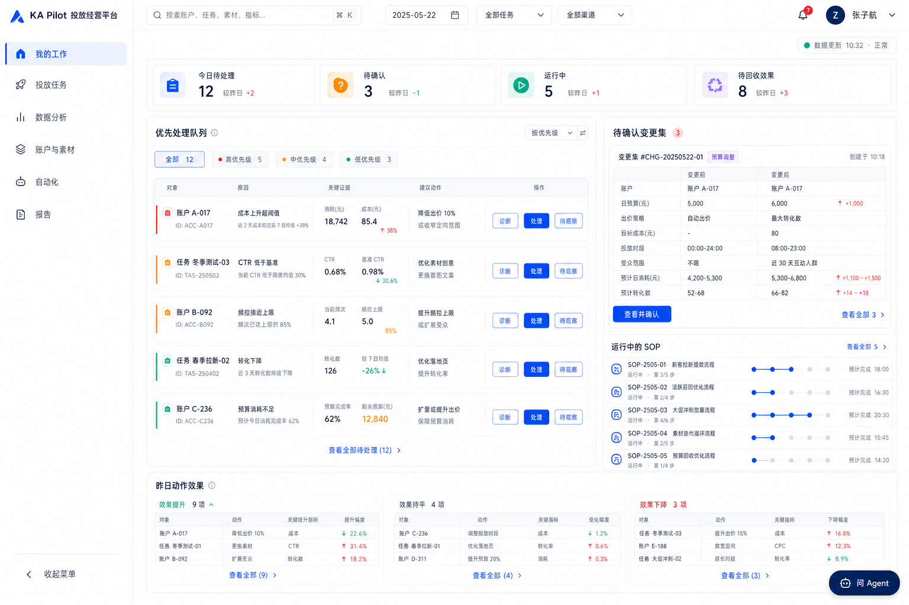
左侧菜单为视觉占位，页面业务内容保留。
Concept prototype · v2
这是按讨论顺序整理的静态网页画册。页面仍然是原始概念图片，不是可交互前端，也不代表功能已经实现；点击任意图片可查看原始分辨率。
从角色工作区进入长期经营对象
PAGE 01
今日待处理、待确认、运行中、效果回收与数据新鲜度。

左侧菜单为视觉占位，页面业务内容保留。
PAGE 02
目标差距树、任务健康、聚合阻塞、经营简报与需拍板事项。
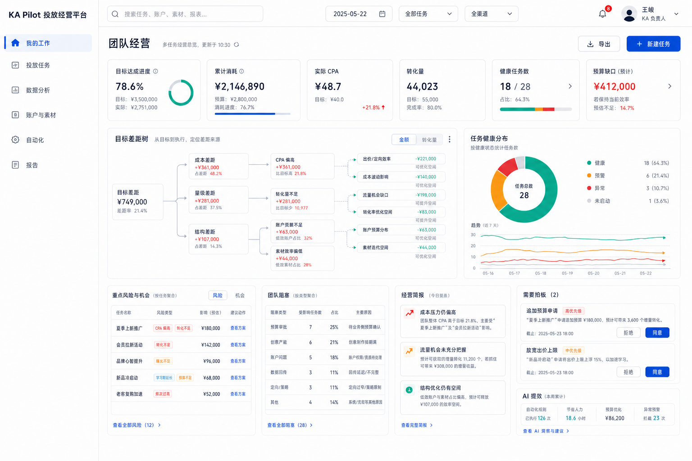
左侧菜单为视觉占位，页面业务内容保留。
PAGE 03
任务配置、资源准备度、健康状态、负责人和里程碑。
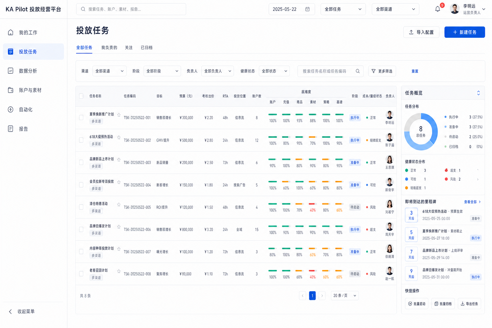
左侧菜单为视觉占位，页面业务内容保留。
PAGE 04
以投放任务串起目标、资源、策略、SOP、异常、操作与效果回收。
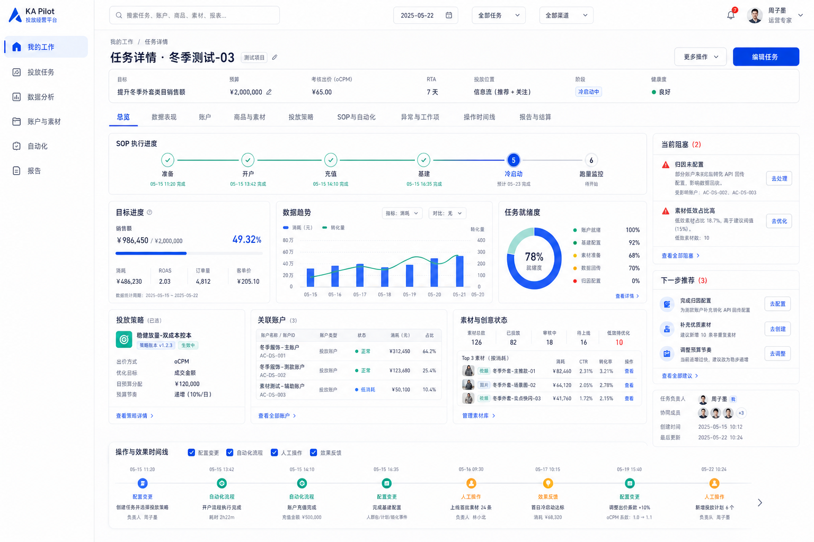
左侧菜单为视觉占位，页面业务内容保留。
从统一语义层到可验证的投放打法
PAGE 05
认证指标、维度、数据视图、数据健康、交叉筛选和表内 Agent。
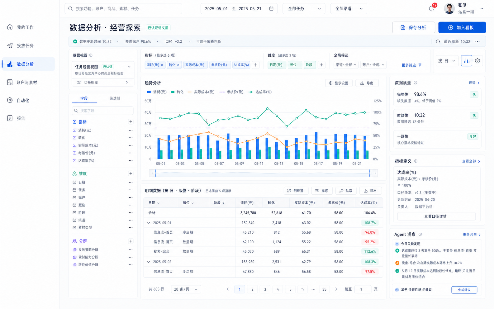
左侧菜单为视觉占位，页面业务内容保留。
PAGE 06
官方数据视图、可复用分析组件、查询预估和 Agent 辅助建表。
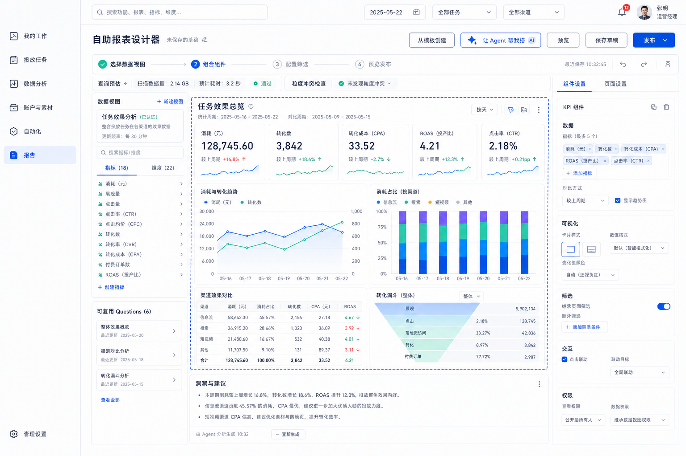
左侧菜单为视觉占位，页面业务内容保留。
PAGE 07
沉淀版位、投法、RTA、阶段、样本和效果；策略不是自动化触发规则。
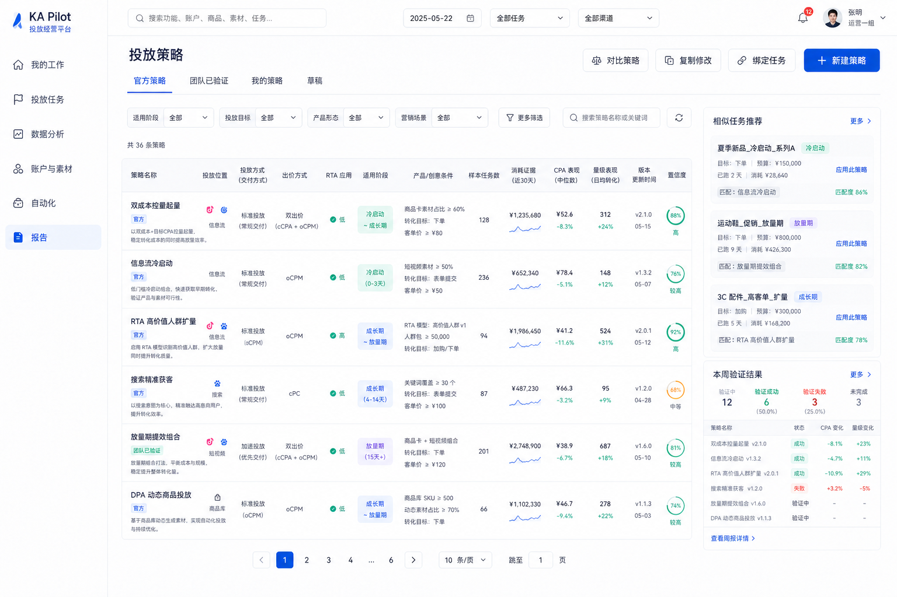
左侧菜单及高亮为视觉占位，页面业务内容保留。
PAGE 08
完整展示投放地图、商品素材组合、适用条件、历史验证与版本对比。
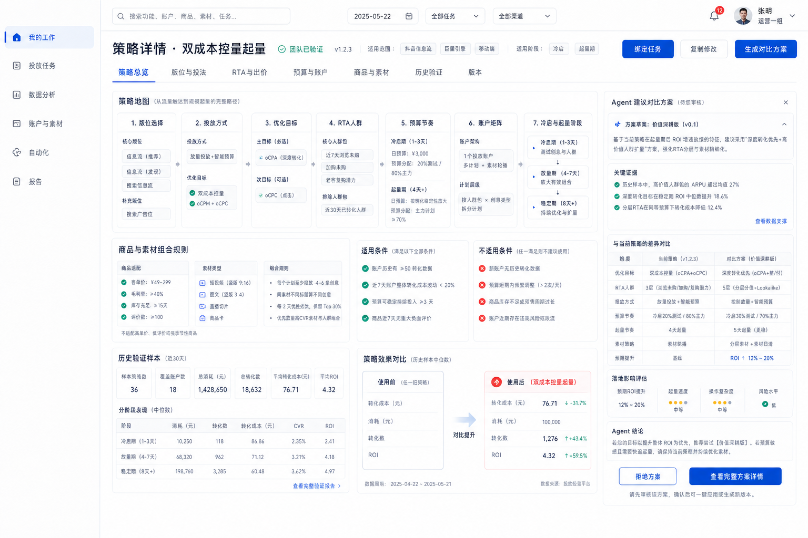
左侧菜单及高亮为视觉占位，页面业务内容保留。
把账户、商品素材和自动化执行真正连起来
PAGE 09
账户生命周期、容量、余额、健康、任务匹配与批量变更预览。
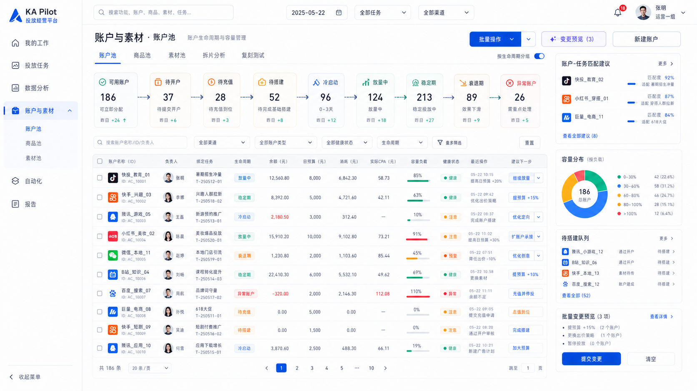
左侧菜单为视觉占位，页面业务内容保留。
PAGE 10
商品×素材矩阵、内容拆解、生命周期、复刻谱系和测试任务。
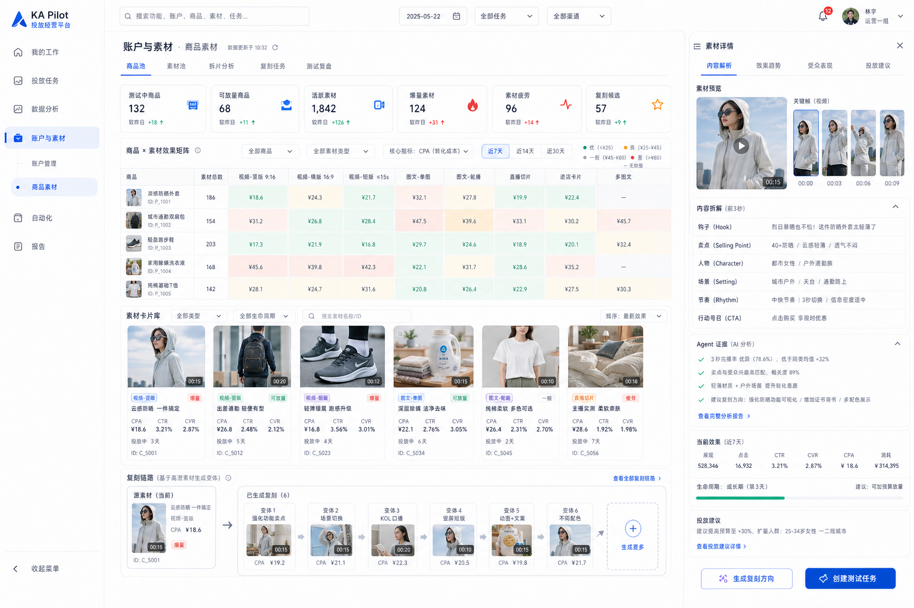
左侧菜单为视觉占位，页面业务内容保留。
PAGE 11
官方模板、个人和团队资产、触发规则、未触发解释、运行状态与原子能力。
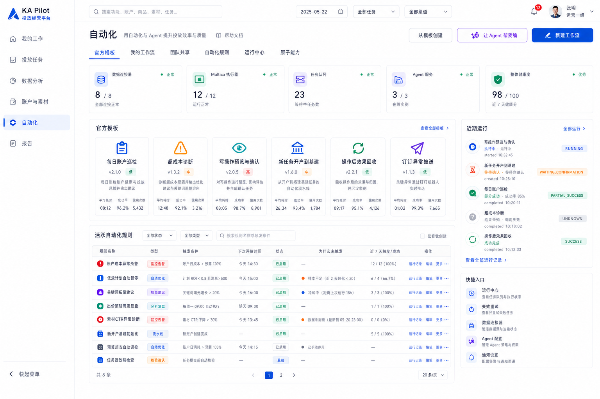
左侧菜单为视觉占位，页面业务内容保留。
PAGE 12
统一画布、投放领域节点、Agent 草稿、类型校验、幂等和发布流程。
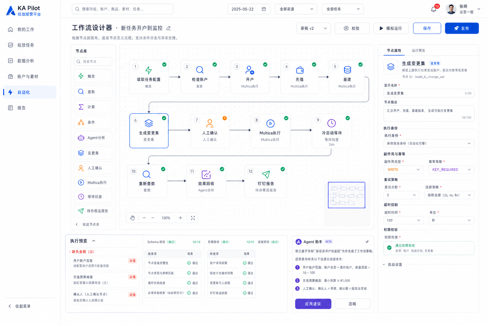
左侧菜单为视觉占位，页面业务内容保留。
PAGE 13
不可变版本、节点状态、变更集、权限、冲突锁、Multica 对账与效果回收。
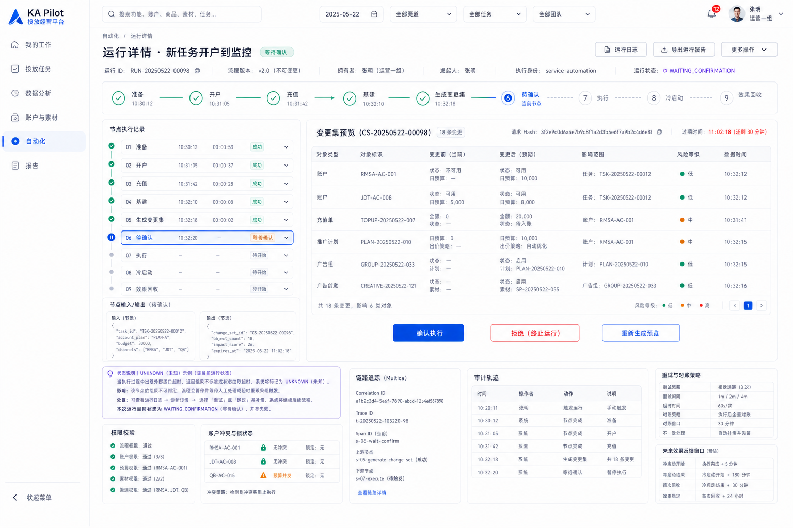
左侧菜单为视觉占位，页面业务内容保留。
从经营结果到报告、辅助决策和钉钉闭环
PAGE 14
结算单模板版本、字段映射、缺失校验、数据新鲜度和 Agent 经营洞察。
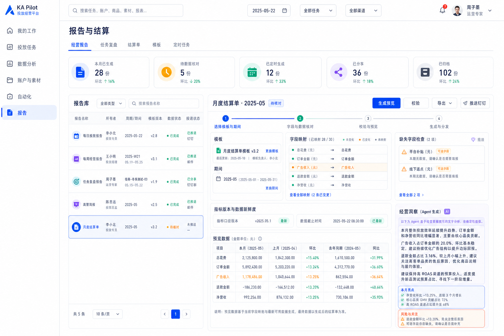
左侧菜单为视觉占位，页面业务内容保留。
PAGE 15
显式上下文、实时引用、结论—证据—动作、结构化资产与 Patch 接受流程。
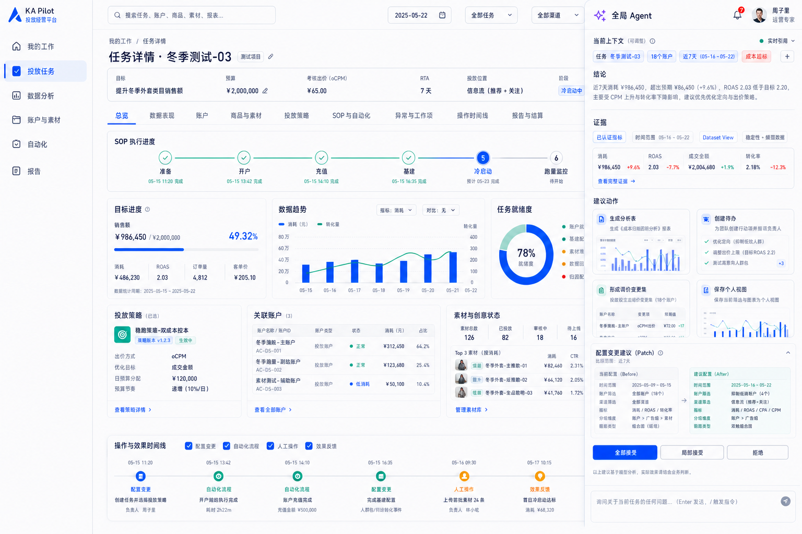
左侧菜单为视觉占位，页面业务内容保留。
PAGE 16
查询、媒体写确认、执行中动态更新，以及部分成功后的重试闭环。
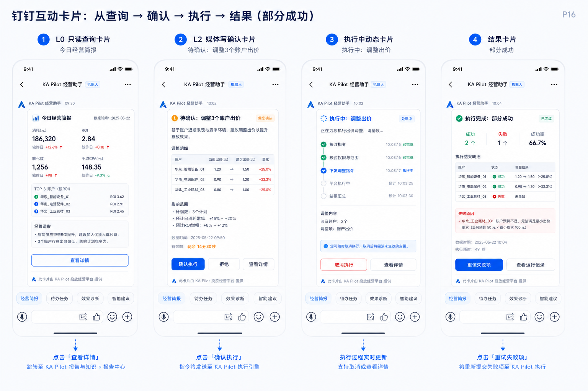
本页为消息触达形态展示，不代表钉钉群数据范围已经确定。